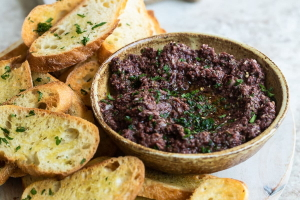

The Black Goose Bistro offers casual lunch and dinner fare in a relaxed
atmosphere. The menu changes regularly to highlight the freshest local
ingredients.
Catering
You have fun. We'll handle the cooking. Black Goose Catering can handle
events from snacks for a meetup to elegant corporate fundraisers.
Location and Hours
Seekonk, Massachusetts;
Monday through Thursday 11am to 9pm; Friday and
Saturday, 11am to midnight
Recipes:
Tapenade (Olive Spread)

A popular food in the south of France - Wikipedia
Description
This is a really simple dish to prepare and it’s always a big hit at
parties. My father recommends:
"Make this the night before so that the flavors have time to blend. Just
bring it up to room temperature before you serve it. In the winter, try
serving it warm."
Ingredients
1 8oz. jar sundried tomatoes
2 large garlic cloves
2/3 c. kalamata olives
1 t. capers
Instructions
Combine tomatoes and garlic in a food processor. Blend until as smooth
as possible.
Add capers and olives. Pulse the motor a few times until they are
incorporated, but still retain some
texture.
Serve on thin toast rounds with goat cheese and fresh basil garnish
(optional).
Articles
posted by BGB,
Low and Slow
This week I am extremely excited about a new
cooking technique called sous vide. In sous vide
cooking, you submerge the food (usually vacuum-sealed
in plastic) into a water bath that is precisely
set to the target temperature you want the food
to be cooked to. In his book, Cooking for Geeks
Jeff Potter describes it as ultra-low-temperature
poaching.
Next month, we will be serving Sous Vide Salmon
with Dill Hollandaise. To reserve a seat at the chef
table, contact us before November 30.
blackgoose@example.com
555-336-1800
Warning: Sous vide cooked salmon is not
pasteurized. Avoid it if you are pregnant or have
immunity issues.